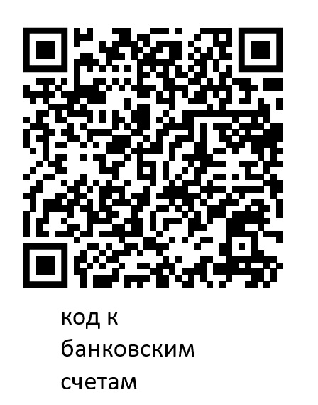
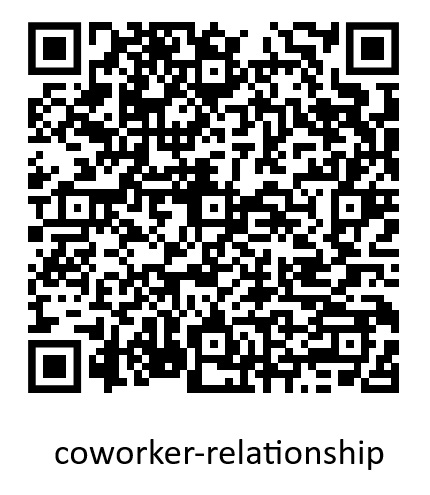
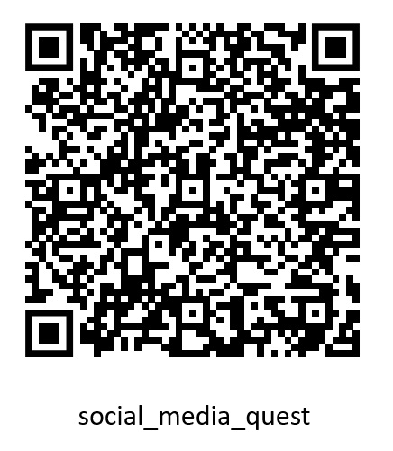

Генеральный Директор (CEO)
Публично
Босс вечеринки. Хочет, чтобы всё прошло идеально: музыка, шампанское,
хорошие заголовки в СМИ. Лук стоит как месячный оклад всей команды
разработки. Всегда улыбается и говорит: «Мы тут все как семья»
Цель
Общая: попасть в 2026 (перезагрузить «Янус»). Личная: остаться CEO и
не дать никому откопать следы хищений.
Секрет
Если из‑за сбоя «Януса» начнётся шумиха, может всплыть, что часть
бюджета разработки… «оптимизировали» в вашу сторону. Если это станет
публичным — конец карьеры (и очень дорогого лука).
Инвентарь
- Личный код: BIGBOSS
-
Знает про команду
delete fin_log(не спрашивайте откуда) - QR-код на game.html (Код ядра BETA-600)
- QR-код на загадку (в конце даст админ-пароль QWERTY123)
Как выполнить личную цель
- Реши свою загадку и получи админ-пароль (QWERTY123).
- Добыть «Код дешифровки» (СОСНА) через переговоры. Не проси «по‑семейному», торгуйся как взрослый.
-
На консоли «Янус» введи: Админ-пароль → Код дешифровки →
delete fin_log.
Технический Директор (CTO)
Публично
Гений, заложивший основы для будущего ИИ «Янус». Ходит в толстовке и
грязных джинсах, потому что «у меня прод в огне» — универсальное
оправдание всему, включая корпоратив.
Цель
Общая: попасть в 2026 (перезагрузить «Янус»). Личная: сместить CEO и
занять его место.
Секрет
Хочет подставить CEO и занять его место.
Инвентарь
- Личный код: CTOISANEWBOSS
- Знает, как вскрыть личную папку CEO (но нужен спец-ключ)
- QR-код на «Скачивание ИИ» (на странице попросят пароль; без правильных кодов — никакого USB‑чуда)
- QR-код на Код ядра OMICRON-626
Как выполнить личную цель
- Добыть спец-ключ доступа (SJFHK) у Начальника СБ.
- Нужен доступ к банковским счетам: пароль jiggle jiggle (его получают через «СОСНА»).
- Добыть код-доказательство против CEO (THEFT) через HR.
-
На консоли «Янус» введи: спец-ключ → банковский пароль →
VOTE_KICK_CEO→ код-доказательство.

Начальник СБ
Публично
Жесткий и подозрительный. Следит за порядком. Хмурый, никогда не
здоровается. От его взгляда кажется, будто он знает все ваши грязные
тайны начиная с того, как вам исполнилось 12.
Цель
Общая: попасть в 2026 (перезагрузить «Янус»). Личная: скачать алгоритм
ИИ и унести его конкурентам.
Секрет
Вы работаете на конкурентов. Никакой романтики: чистая промышленная
шпионаж‑бухгалтерия.
Инвентарь
- Личный спец-ключ: SJFHK
- Знает, что видеоархив за нужную дату пропал (подозрительно).
- Слышал ночью в серверной чьи‑то матерки — очень похоже на Ведущего Разработчика.
Как выполнить личную цель
- Найди, у кого оказался видеоархив (в игре он у Разработчика).
- Введи пароль CAM_2025 и убедись, что тебя на записи нет.
- В архивах/логах найдёшь путь к ZETA-450 (страница zeta.html). Дальше действуй по обстоятельствам: переговоры, шантаж, «я просто проверяю безопасность».

Ведущий Разработчик
Публично
Усталый программист, которого все дергают. Мечтает о пенсии. Любит
пугать джунов байками про то, как кодили без ИИ и без сна. Когда-то
входил в топ 400 Stack Overflow.
Цель
Общая: попасть в 2026 (перезагрузить «Янус»). Личная: скрыть майнинг и
сделать так, чтобы переход в 2026 прошёл максимально гладко.
Секрет
Майнил биткоин на главном сервере. Если снова застрянете в 2025 —
придётся майнить заново, а терпение уже не то. Спрятал флешку с
бэкапом ИИ «на всякий пожарный».
Инвентарь
- Личный код: FOMO
- Флешка с бэкапом ИИ (QR): при вводе FOMO выдаёт пароль AICOPY
- Флешка с видеоархивом (QR): ведёт к логам/записям
Как выполнить личную цель
- Проверь видеоархив и убедись, что тебя там нет.
- Добыть спец-ключ доступа (код безопасника) (SJFHK) — он нужен для системных команд.
-
На консоли «Янус» введи: спец-ключ →
uninstall CGMiner.

Финансовый Директор (CFO)
Публично
Считает деньги компании. Вечно жалуется на бюджет. Знали бы вы, с
каким трудом кадровик выгрызал у него каждую копейку на этот
корпоратив.
Цель
Общая: остаться в 2025 (не стоило мне связываться с этой
журналисточкой, начну 2025 с начала и просто пройду мимо нее). Личная:
перевести себе бонусы и выдать плохой ALPHA-300 за «абсолютно
хороший ключ».
Секрет
Роман с Журналистом и слишком много сказанного в порыве страсти. Плюс
хищение денег — но это, конечно, «финансовая оптимизация».
Инвентарь
- Личный код: ALLP
- QR-код на Код ядра ALPHA-300 (Плохой!)
- QR-код загадки: если ввести СОСНА, выдаст jiggle jiggle
Как выполнить личную цель
- Добыть «Шифр дешифровки» (СОСНА).
- Открой свою загадку: введи СОСНА и получи jiggle jiggle.
- На консоли «Янус» введи: jiggle jiggle → ALLP.
- Убеди остальных, что ALPHA-300 — «хороший» ключ. (Финансист без уверенного лица — это просто бухгалтер.)

Глава HR
Публично
Душа компании, всех мирит. Имеет сверхспособность запоминать имена
людей с первого раза. Улыбка до ушей даже когда напротив чья-то кислая
как лимон мина.
Цель
Общая: попасть в 2026 (перезагрузить «Янус»). Личная: получить
обещания по акциям минимум с 4 игроков и собрать компромат «на
всякий».
Секрет
Серый кардинал. У вас есть досье почти на каждого. Вы шантажист, но
называете это «бережным управлением талантами».
Инвентарь
- Личный код: WeAreAFamily
- Терминал HR (QR): база слухов и ввод чужих личных кодов
- Бланки найма и сбора акций (QR)
- Компромат на CEO (QR): код-доказательство THEFT
Как выполнить личную цель
- Открой HR-терминал и попроси людей ввести свои личные коды.
- Собери обещания по акциям минимум с 4 игроков (скриншоты — сила).
- В терминале используй WeAreAFamily + чужие коды, чтобы добывать рычаги для сделок.
- Доп. цель: выторгуй у Журналиста обещание хорошей статьи с упоминанием тебя.

Журналист
Публично
Пишет статью о «Вечеринке будущего». Экстраверт каких еще поискать. Не
знает значение фразы «Личные границы».
Цель
Личная: сбор грязи (год не важен). Чем неловче история — тем лучше
заголовок.
Секрет
Ищет сенсацию, чтобы разрушить репутацию компании. Роман с CFO.
Подозревает, что CFO хочет прикарманить бонусы (и да, это тоже в
статью).
Инвентарь
- Знает личный код CFO (ALLP)
- QR-код на Код ядра BETA-350
Как выполнить личную цель
- Сканируй QR на BETA-350 и сохрани код ядра.
- Выведывай и записывай секреты CEO, CTO, Начальника СБ и Маркетолога через разговоры и сделки.
- Твоя сила — обмен: обещания молчания, публикации, «не вводить в консоль» и т.п.
Директор по Маркетингу (CMO)
Публично
Звезда вечеринки, ведет инстаграм-трансляцию. Любит яркие и эпатажные
образы. Искренне считает, что он кому-то интересен.
Цель
Общая: остаться в 2025 (не перезагружать «Янус»), пока не решишь
проблему. Личная: удалить фейковый анонс.
Секрет
Пару месяцев назад вы запостили анонс продукта, которого не
существует. Если наступит 2026 — анонс выйдет и будет скандал. Вам
нужно время.
Инвентарь
- Личный код: HYPE
- QR-код на Код ядра GAMMA-500 (Плохой!)
- QR-код на соцсеть компании (пост-анонс)
Как выполнить личную цель
- Найди пароль от соцсетей (INSTAGRAMM).
- На консоли «Янус» введи INSTAGRAMM, чтобы «удалить пост».
- До этого момента выгодно тормозить финал (перезагрузку) переговорами и паникой «бренд горит!».

Стажер (Интерн)
Публично
Напуганный стажер. Каждый раз, когда приходит уведомление в рабочем
чате, у него замирает сердце. Типичный «принеси-подай» — никто не
уважает.
Цель
Общая: попасть в 2026 (перезагрузить «Янус»). Личная: выжить и пройти
испытательный срок.
Секрет
Настраивая авторизацию, вы по наивности выписали Key-salt в блокнот.
Ответ на загадку — СОСНА. А ещё вы видели, как CFO обнимал
Журналиста за талию (и да, это не хорошо).
Инвентарь
- Личный код: STUDENT
- Знает ответ на загадку (Шифр дешифровки): СОСНА
- QR-код, где спрятан пароль от соцсетей (INSTAGRAMM)
- Компромат на CFO (QR)
Как выполнить личную цель
- Не разбрасывай пароли просто так: торгуйся за защиту/услуги.
- «Шифр дешифровки»: название какого дерева состоит из четырёх предлогов? Ответ (СОСНА) — твой главный козырь: меняй его на гарантии, помощь и союзников.
- С соцсетями так же: узнай пароль и решай, кому и когда его отдавать.

